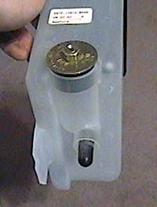
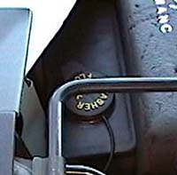

|
From "ICULUKIN" from the F150 Online boards: "For those with powercoolers who want to mount them underhood with the battery, here is a option to do as far as keeping the washer tank. Buy washer tank (Ford part # E5TZ-17618-B). Then go to Advance Auto Parts and buy a 1 3/8" plug, and a vacuum cap to block off factory holes in tank. You will have to put silicon or glue around the plug to keep water from leaking, if you do this then you will see why. After the glue/silicone has dried then drill a hole directly above the factory hole for your pump. I drilled a 1/2" hole and then Dremeled out the rest until the grommet fit. You should be done modding the tank so then all that is left to do, is fit it between your headlight and powercooler. These aren't the best directions but here are some pics so maybe you guys can see what I'm talking about."


|